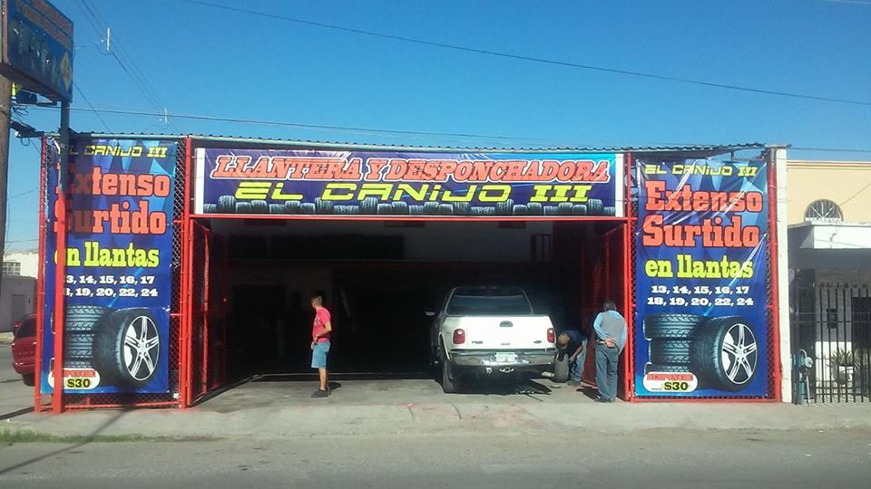

| HISTORIA |
|---|
|  |
|
CANIJO III - LLANTERA Y DESPONCHADORA LA LLANTERA TOMO ABRÍO SUS PUERTAS EL 13 DE OCTUBRE DEL 2007,CON LA INTENCION DE EXPANDIRSE EN EL ÁREA DE CD. JUAREZ Y ESTA COMO DICE SU NOMBRE, ES LA TERCERA DESPONCHADORA QUE ABRE SUS PUERTAS A LOS AUTOMOVILISTAS DE LA FRONTERA. LA TERCERA DESPONCHADORA SE INCORPORO MÁS AL NORTE DE LA CIUDAD PARA ABARCAR EL SECTOR FRONTERIZO. CUENTA CON OTRAS DOS SUCURSALES QUE SE ENCUENTRAN DENTRO DE LA CIUDAD Y SE UBICAN: PRIMERA SUCURSAL: BLV.INDEPENDENCIA #831 COL. EL PAPALOTE. A 2 CUADRAS DEL DEPORTIVO SAN ANGEL... MAYOR INF. 656-705-14-83 SEGUNDA SUCURSAL: AV. TECNOLOGICO #3130 COL. PRADERA DORADA ANTES DE LLEGAR A COSTCO... MAYOR INF 656 -502-16-6 |
|
|